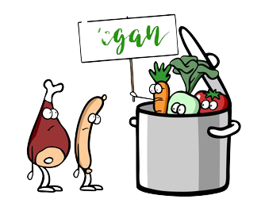

There are several different types of vegetarian diets that people adapt in order to easily transition from eating meat to reducing it or deminishing from their diets completely.
There are three types of vegetarian. OVO eat eggs but no other dairy products. Lacto-OVO vegetarians eat eggs and dairy products. Lacto vegetarians eat dairy products but no eggs.
As a vegan, no meat, poultry, fish, any dairy products, eggs or any other animal product is consumed.
There two types: pescatarians which only eat fish but avoid all other meat and pollo-vegetarians that eat poultry but avoid other meat and fish.
Following this diet, people usually eat plant based food but occasionally eat meat, dairy, eggs, poultry, and fish in small amounts.